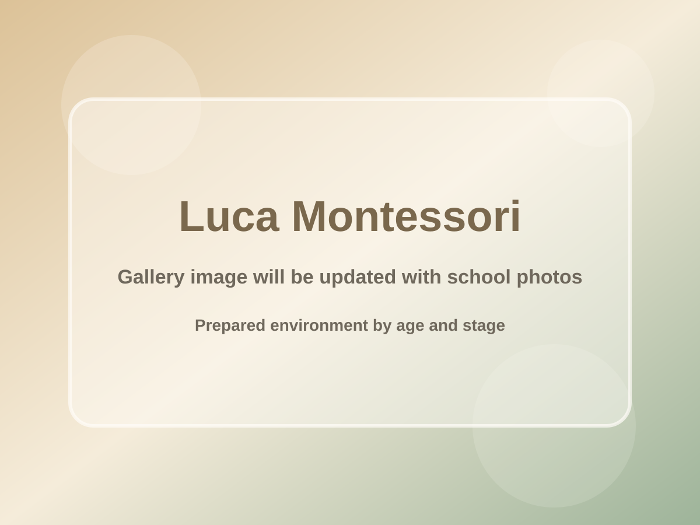

입학 가능 연령
9개월 - 6세발달 단계별로 반을 운영합니다
Prepared environment by age and stage
Luca Montessori는 아이의 연령과 발달 단계에 맞춰 교실과 일과를 세심하게 준비합니다. 아이는 자신의 속도에 맞는 환경 안에서 생활하며, 일상의 질서와 자립을 자연스럽게 익혀갑니다.
Luca Montessori의 특징
3개 환경Nido, Toddler, Luca Preschool은 서로 다른 발달 단계에 맞춰 각각 따로 준비된 환경입니다.
입학 가능 연령
9개월 - 6세발달 단계별로 반을 운영합니다
학급 운영 방식
연령별 맞춤교사와 정원을 반별로 다르게 구성합니다
연령별 환경
질서와 평안함
매일의 자립
적절한 이중언어
정원이 제한된 학급
Luca Montessori 소개
Luca Montessori는 모든 아이를 같은 방식으로 돌보지 않습니다. 연령과 발달 단계에 따라 교실을 나누고, 아이가 무리하지 않고 자신의 리듬으로 생활할 수 있도록 돕습니다.
환경이 아이에게 잘 맞을수록 아이는 더 안정감을 느끼고, 활동에 집중하며, 스스로 해보는 경험을 조금씩 쌓아갑니다.
01
각 반은 아이의 발달 단계에 맞게 구성되어 있어, 아이가 무리 없이 움직이고 선택할 수 있습니다.
02
공간과 일과가 안정적으로 반복될수록 아이는 더 안심하고, 활동에 오래 집중할 수 있습니다.
03
스스로 해보는 경험이 쌓일수록 아이는 일상 속에서 자신감을 얻고 자립심을 키워갑니다.
학급 안내
Nido (9-18 tháng)
걷기 시작하는 아이들을 위한 반으로, 안전한 정서와 초기 자립의 습관을 중요하게 봅니다.
Toddler (18-36 tháng)
Montessori AMI 기반의 이중언어 환경으로, 질서와 사회성의 기초가 자라는 시기를 돕습니다.
Lớp Mẫu giáo Luca (2,5-6 tuổi)
Montessori IMC 기반의 이중언어 환경으로, 사고력과 독립적인 학습 태도를 깊게 키워가는 반입니다.
Luca의 강점
학급을 연령에 따라 나누고, 정원을 조절하며, 각 반에 맞는 교사 구성을 두는 이유는 아이가 보다 안정적인 환경에서 생활하고 배울 수 있도록 돕기 위해서입니다.
“
아이가 편안함을 느끼는 환경에서는 하루의 리듬이 안정되고, 그 안에서 배우고 스스로 해보려는 힘도 자연스럽게 자라납니다.
빠르게 보는 Luca
발달 단계에 맞춰 Nido, Toddler, Preschool을 분리해 운영합니다.
각 반의 인원을 조절해 아이가 안정적으로 적응하고 집중할 수 있도록 돕습니다.
Toddler와 Preschool은 발달 단계에 맞게 Việt - Anh 환경을 경험합니다.
연령과 학급 특성에 따라 교사 수와 역할을 다르게 구성합니다.
아이 스스로 선택하고 움직이며 질서를 익힐 수 있도록 환경을 준비합니다.
Luca의 공간
실제 사진이 들어가면 학부모는 교실의 분위기, 몬테소리 교구, 일상 활동, 그리고 연령별로 준비된 환경을 더 자연스럽게 이해할 수 있습니다.

교실 환경연령에 맞게 준비된 교실의 전체 분위기를 보여주는 이미지 자리입니다.
아이들이 익숙한 하루의 흐름 안에서 활동하는 장면을 담을 수 있습니다.
아이들이 손으로 탐색하고 배우는 교구와 활동 모습을 보여주기 좋습니다.
베트남어와 영어가 자연스럽게 함께하는 언어 환경을 소개할 수 있습니다.
몸을 움직이고 감정을 표현하는 자연스러운 활동 장면을 담을 수 있습니다.
아이들이 자연과 연결되는 순간과 야외 활동의 분위기를 보여줄 수 있습니다.
아이들이 함께 듣고 말하며 관계를 배워가는 순간을 담을 수 있습니다.
학부모가 학교를 둘러보고 교사와 이야기 나누는 장면을 보여주는 데 적합합니다.
Luca에서의 하루
아이는 익숙하고 안정된 교실 안에서 하루를 천천히 시작합니다.
자신에게 맞는 활동을 선택하고, 교사의 적절한 도움 속에서 집중을 깊게 이어갑니다.
일상생활 연습과 언어, 감각, 소그룹 활동 속에서 아이는 매일 자립을 쌓아갑니다.
상담 및 방문 문의
아이의 연령에 맞는 반, 학교 방문 가능 일정, 교실 환경에 대해 궁금한 점이 있으시면 남겨 주세요. 확인 후 학부모님이 이해하기 쉽게 차분하게 안내드리겠습니다.